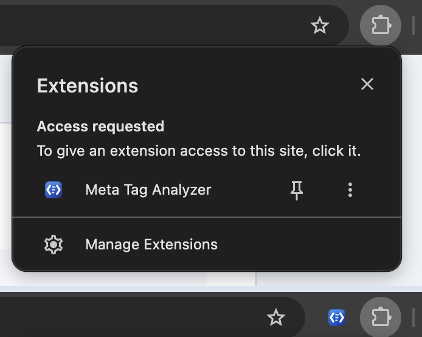
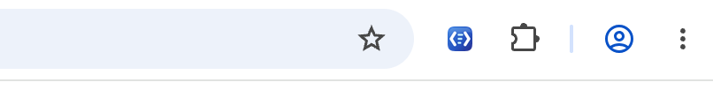
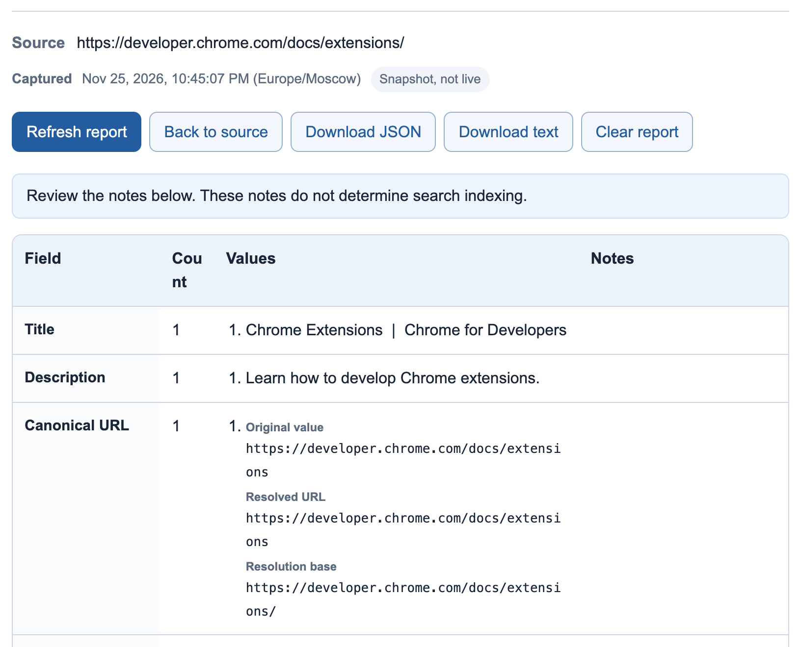

Meta Tag Analyzer
Some of this guide is shown in English.
Welcome to Meta Tag Analyzer
Scan a webpage and see its metadata in one report.
Already pinned? See how to use it.-
Pin the extension
Click Extensions in the Chrome toolbar, then click the pin beside Meta Tag Analyzer.

-
Open the extension
Open the page you want to inspect, then click Meta Tag Analyzer on your Chrome toolbar.

These screenshots illustrate the English interface. Follow the written steps in your language.
Chrome screenshots
Inspect your first page
Show how to pin itThese screenshots illustrate the English interface. Follow the written steps in your language.
-
Open the analyzer
Open the page you want to check and let it finish loading. Click Meta Tag Analyzer on the toolbar or in Chrome’s Extensions menu.

-
Scan the source page
In the Meta Tag Analyzer tab that opens, click Scan page.

-
Read the report
Check the source URL at the top. Review the counts and values for the page title, description, and other metadata.

Use Refresh report after editing the source. To save the report, choose Download JSON or Download text.